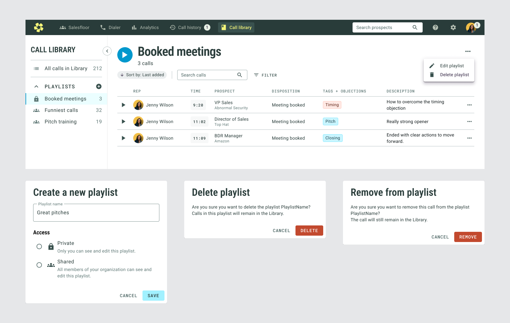
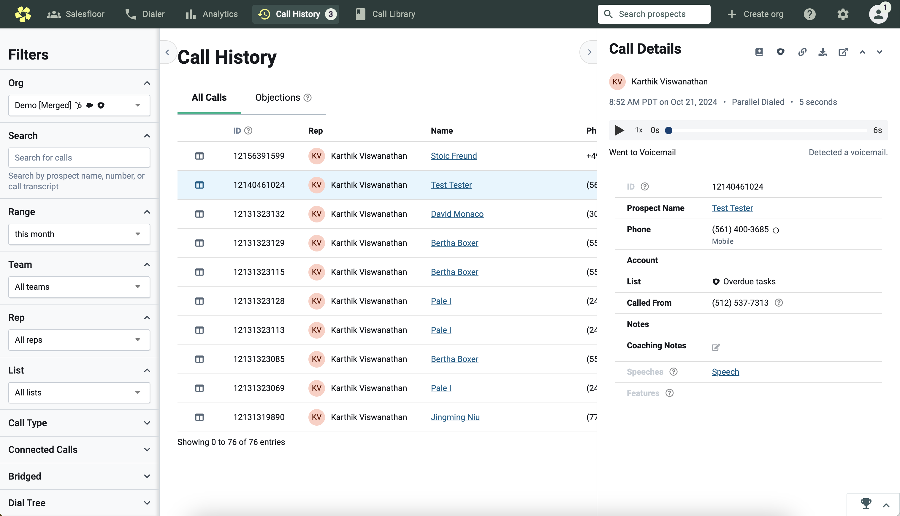
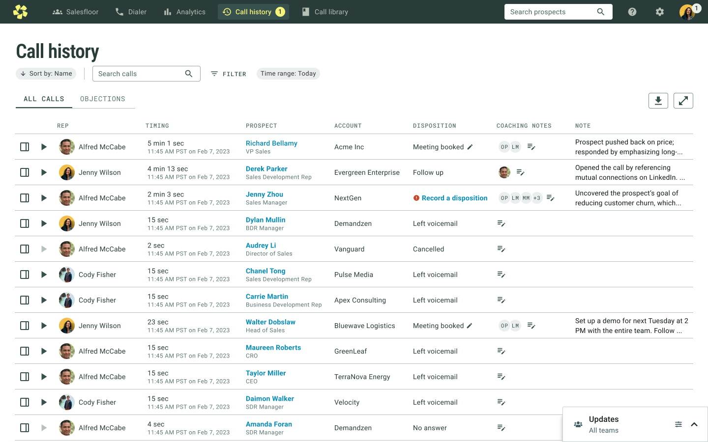
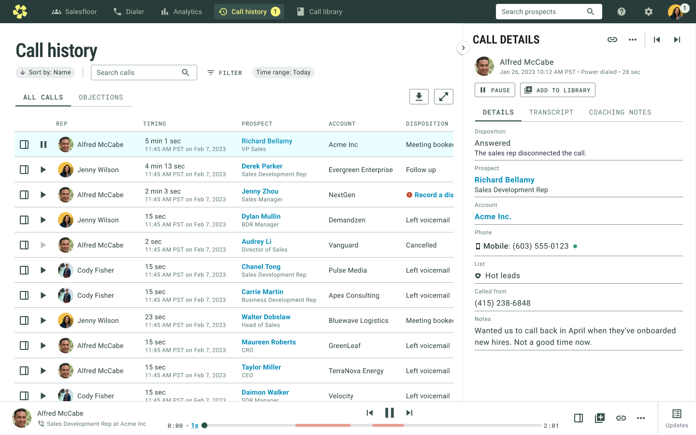
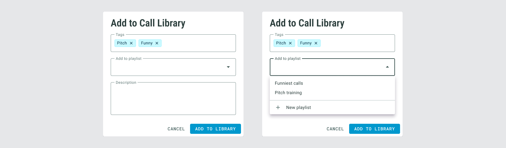

The opportunity
One of Orum’s goals was to help reps book more meetings — not only by connecting them with more prospects, but by helping them perform better once a call connected. Coaching from sales managers was a major part of that.
In research with a dozen SDR managers, three coaching responsibilities came up consistently:
Managers were already coaching with Orum calls — but much of the workflow happened outside Orum.
What users were doing instead
Managers spent a lot of time looking for calls to review. They kept training documents outside Orum with links to recordings. Reps maintained their own lists of calls to bring into 1:1s for feedback.
Sales Manager
- Creates a library of calls to train the team and onboard new reps
- Runs weekly coaching sessions reviewing calls as a group
- Reviews calls during 1:1s with reps
- Finds it time-consuming to find calls to review
Sales Rep
- Brings calls to weekly 1:1s to get feedback
- Listens to successful calls from experienced reps
- Reviews their own calls to understand what went well and what could improve
Key product decisions
I considered folding saved calls into Call History, but we had a longer-term vision for a Library that could eventually hold all types of sales resources. Call Library became the first step toward that system.
I borrowed patterns from Call History and common audio products so the interface would feel immediately understandable: play from the list, keep playback persistent, and open details without losing context.
Call Library and Call History were tightly connected. Rather than reproduce a cumbersome playback pattern for consistency, we invested in improving Call History too.
A library built around coaching
By default, users see every saved call in a scannable table. Calls can be played immediately or opened for more information.

Playing a call opens the transcript in a side panel while a persistent audio bar appears at the bottom, keeping the user in the same context.
Playlists can be private or shared across the organization, supporting both individual coaching and team-wide training.

Reworking Call History at the same time
The way to add calls to the Library was from Call History, but Call History required users to open a call before they could listen to it. I explored keeping the new Library consistent with that pattern, but we decided consistency wasn’t a good reason to preserve a usability problem.


The key improvement was being able to play directly from the table and move between calls using the same persistent audio model.


What we learned after launch
I tested the experience with Orum customers and on UserTesting.com. Feedback was overwhelmingly positive and the feature was used immediately after release.
One assumption was wrong: we initially allowed only managers to add calls to the general team library. Managers were too short on time and relied on reps to help curate examples. Once we changed the permission model, usage increased significantly.
We also saw an increase in the number of calls listened to in Call History after introducing the new playback experience.